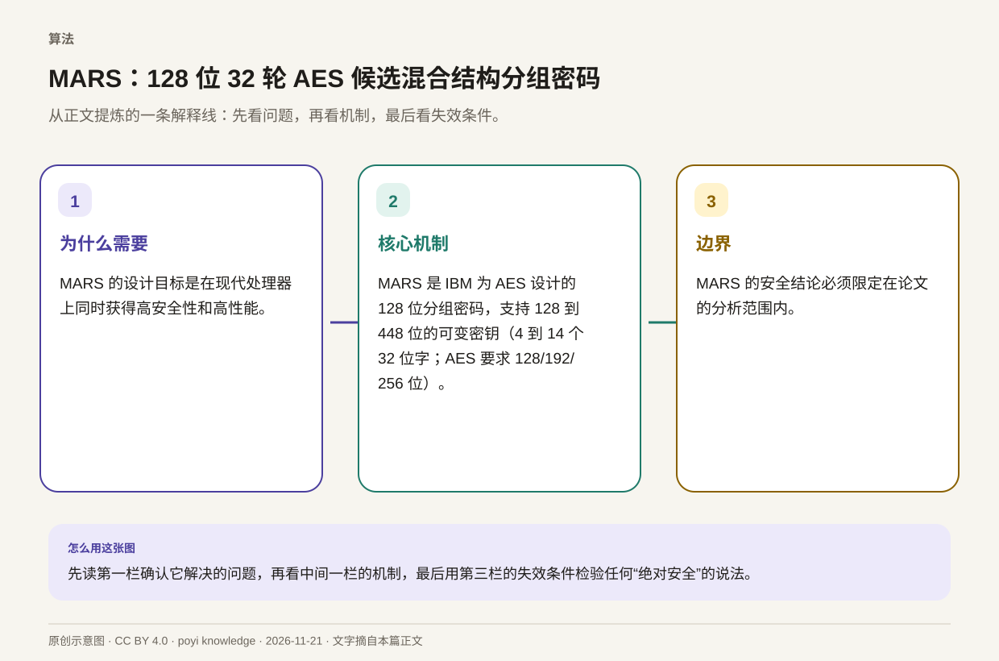
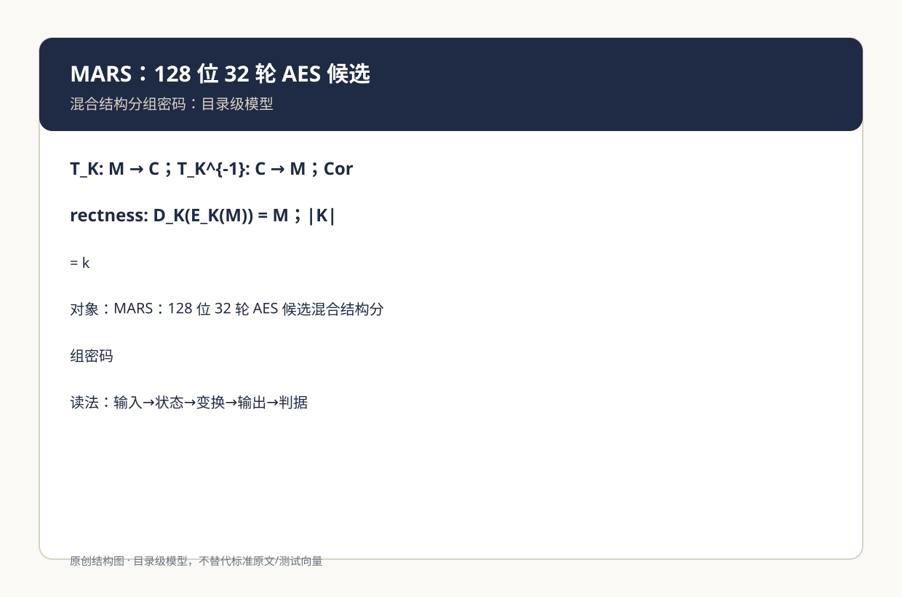

原理与机制
算法：MARS 分组密码（MARS）。MARS 是 IBM 为 AES 设计的 128 位分组密码，支持 128 到 448 位的可变密钥（4 到 14 个 32 位字；AES 要求 128/192/256 位）。它有 32 轮，分成三个阶段：8 轮无密钥的前向混合、16 轮带密钥的核心轮、8 轮无密钥的后向混合；外围还有 4 个初始密钥字和 4 个末尾密钥字。密钥扩展产生 40 个 32 位字 K0..K39，其中 K0..K3 用于初始加法，K4..K35 用于 16 个核心轮，K36..K39 用于最后的减法。128 位明文按小端序装入四个 32 位字 D0..D3。加密的总体结构是：
D_i = P_i + K_i i = 0..3
8 轮前向混合（无密钥）
16 轮核心轮（使用 K4..K35）
8 轮后向混合（无密钥）
C_i = D_i - K_{36+i} i = 0..3
前向混合每轮用 D0 的四个字节分别查 S0/S1，把结果异或或加到 D1、D2、D3 上，再旋转 D0：
for i = 0..7:
D1 ^= S0[low byte of D0]
D1 += S1[2nd byte of D0]
D2 += S0[3rd byte of D0]
D3 ^= S1[high byte of D0]
D0 = ROR(D0, 24)
if i = 0 or 4: D0 += D3
if i = 1 or 5: D0 += D1
(D0, D1, D2, D3) = (D1, D2, D3, D0)
核心轮使用 E 函数。E 取一个数据字和两个密钥字，产生三个输出 L、M、R：
M = (in + K_{2i+4}) mod 2^32
R = ((in <<< 13) * K_{2i+5}) mod 2^32
L = S[M mod 512]
R = R <<< 5
r = R mod 32
M = M <<< r
L = L XOR R
R = R <<< 5
L = L XOR R
r = R mod 32
L = L <<< r
return (L, M, R)
<<< 是 32 位循环左移，* 是模 2^32 乘法；「the key words used for multiplication」（用于乘法的密钥字）必须是奇数，且不能含十个连续 0 或十个连续 1，这由密钥扩展保证。核心轮把 E 的输出分散到四个字：
for i = 0..15:
(L, M, R) = E(D0, K_{2i+4}, K_{2i+5})
D0 = D0 <<< 13
D2 += M
if i < 8:
D1 += L
D3 ^= R
else:
D3 += L
D1 ^= R
(D0, D1, D2, D3) = (D1, D2, D3, D0)
前 8 个核心轮和后 8 个核心轮使用不同的目标字，这是 MARS 混合结构的一部分。论文把 16 轮核心称为 type-3 Feistel 网络：每轮用一个数据字和两个密钥字「to modify the other three data words」（修改其余三个数据字）。后向混合与前向混合方向相反，用减法代替部分加法：
for i = 0..7:
if i = 2 or 6: D0 -= D3
if i = 3 or 7: D0 -= D1
D1 ^= S1[low byte of D0]
D2 -= S0[high byte of D0]
D3 -= S1[3rd byte of D0]
D3 ^= S0[2nd byte of D0]
D0 = D0 <<< 24
(D0, D1, D2, D3) = (D1, D2, D3, D0)
密钥扩展从一个 15 字的临时表 T 开始：T 的前 n 个字是用户密钥（n=4..14），T[n]=n，其余为 0。然后执行 4 次迭代，每次先做线性变换，再做 4 轮搅拌，最后取 10 个字作为 K 的下 10 个字：
for j = 0..3:
for i = 0..14:
T[i] ^= ((T[(i-7) mod 15] ^ T[(i-2) mod 15]) <<< 3) ^ (4*i + j)
repeat 4 times:
for i = 0..14:
T[i] = (T[i] + S[low 9 bits of T[(i-1) mod 15]]) <<< 9
for i = 0..9:
K[10*j + i] = T[(4*i) mod 15]
最后修正 16 个用于乘法的密钥字 K5、K7、…、K35。对每个这样的 K[i]：
j = K[i] mod 4
w = K[i] with both lowest bits set to 1
M_l = 1 iff w_l belongs to a run of at least 10 equal bits
and 2 <= l <= 30 and w_{l-1} = w_l = w_{l+1}
r = K[i-1] mod 32
p = B[j] <<< r
K[i] = w XOR (p AND M)
固定表 B 是 {0xA4A8D57B, 0x5B5D193B, 0xC8A8309B, 0x73F9A978}，来自 S-box 的第 265 到 268 项。这个修正保证乘法密钥的最低位为 1，且没有十个连续 0 或 1。S-box 是 512 个 32 位字，前 256 个记为 S0，后 256 个记为 S1。论文说明它由 SHA-1 以伪随机方式生成：S[5i+j] 取自 SHA-1(5i、j、c1、c2、c3) 的第 j 个输出字，c1=0xB7E15162、c2=0x243F6A88，c3 是经过筛选的常数。完整表在论文附录 A。S-box 满足：不含全 0 或全 1 字；S0 和 S1 内部任意两个条目至少有三个字节不同；不存在相等、逐位取反或相加为零的条目对。解密是加密的严格逆过程。先从密文加回 K36..K39，再依次撤销 8 轮后向混合、16 轮核心轮和 8 轮前向混合，最后减去 K0..K3。撤销后向混合时先右旋字数组、D0 右旋 24 位，再按加密的逆序撤销 S-box 更新和可选减法；撤销核心轮时先右旋字数组、D0 右旋 13 位，再用同一个 E 函数撤销 L/M/R 的加法和异或；撤销前向混合时要先减去 D1/D3，再左旋 D0 24 位，最后撤销四个 S-box 更新。这个顺序不能随意交换，否则加法中的进位和旋转不会抵消。

为什么重要
MARS 的设计目标是在现代处理器上同时获得高安全性和高性能。论文认为当时的计算机已经支持快速乘法、数据相关旋转和表查找，因此 MARS 没有沿用纯 Feistel 或纯 SP 网络的单一结构，而是把 8 轮无密钥的前向混合、16 轮带密钥的核心轮和 8 轮无密钥的后向混合组合起来：外层混合提供快速的密钥和数据扩散，核心轮提供主要的密码学强度。设计者估计 MARS 比三密钥 3DES 更安全，并认为所有已知密码分析（包括线性和差分分析）需要超过 2^128 的数据，因此在 128 位块上不可行。这个结论是 1999 年的设计者估计，不是对全部攻击模型的形式化证明。性能方面，论文报告其 C 实现在 200 MHz Pentium-Pro 上约 65 Mbit/s，在 200 MHz PowerPC 上约 85 Mbit/s；专用硬件可获得约 10 倍加速。这些是 1999 年的实现数据，不是今天平台的性能承诺。MARS 的密钥扩展成本与密钥长度基本无关，因此 128/192/256 位密钥的加密速度接近。MARS 在 1999 年 8 月被选为五种 AES 最终候选之一，但没有被选为 AES。NIST 最终选择 Rijndael，并在 2001 年 11 月 26 日发布 FIPS 197；FIPS 197 在 2023 年 5 月 9 日更新为 FIPS 197-upd1。MARS 的 1999 年修订包含一个被 NIST 接受的密钥扩展微调，本文的密钥扩展和测试向量都采用修订后的版本。从教学角度看，MARS 是一个混合结构案例：它把无密钥混合层和带密钥核心层分开，核心轮使用乘法、数据相关旋转和 S-box，密钥扩展还包含位级修正。它的中间值和 Expanded Key 向量适合检查实现是否在密钥扩展、字节序、旋转方向和加法/减法逆序上逐项对齐。
应用与实例
作者页面提供的测试向量有四个文件：ecb_ivt.txt 给出三组密钥长度的加密和解密中间值，ecb_vk.txt 给出 576 组可变密钥向量（每组还印出 40 个扩展密钥字），ecb_vt.txt 给出 384 组可变明文向量，ecb_tbl.txt 给出 120 组覆盖 S-box 条目的表测试。本文完整复现了：
- 6 组 IVT 块（128/192/256 位各一组加密和一组解密），每组 35 个中间值；本文只校验其明文与密文，密钥扩展改由 VK 的 40 个字逐字校验，不逐行声称复现全部中间值；
- 576 组 VK 向量：40 个 Expanded Key 字逐字匹配，零明文加密得到印出的密文，解密回到零明文；
- 384 组 VT 向量和 120 组 TBL 向量：加密、解密都与文件一致。```text 128 位，全零密钥、全零明文： K = 00000000000000000000000000000000 P = 00000000000000000000000000000000 C = DCC07B8DFB0738D6E30A22DFCF27E886
192 位，全零密钥、全零明文： K = 000000000000000000000000000000000000000000000000 P = 00000000000000000000000000000000 C = F6B1B53C34B2B9E87F748482197E67E6
256 位，全零密钥、全零明文： K = 0000000000000000000000000000000000000000000000000000000000000000 P = 00000000000000000000000000000000 C = E998F63D39378523A951320451085D56
```text
K = 80000000000000000000000000000000
Expanded Key[0..7] =
7A690123 4A4CF6EE D1C145FD 4A929170
551A7316 D46B4D1F 6A68B2DD 52A45B5F
P = 00000000000000000000000000000000
C = B3E2AD5608AC1B6733A7CB4FDF8F9952
VT 128 位第 1 条（全零密钥，明文只有最高位为 1）：
K = 00000000000000000000000000000000
P = 80000000000000000000000000000000
C = D962EFEBA75817BF6ED24BBBB5B7820D
这些向量覆盖三种密钥长度，VK 与 VT 的每条向量都只把密钥或明文的一个位置 1（单比特密钥/明文），并覆盖零与非零情形以及 S-box 的全部 512 个条目。它们不是加密后能解密的自洽测试，而是作者提交的固定答案文件；留存件只保住列出文件名与大小的目录页，向量正文本身没有留存，因此本行不断言与向量内容做过逐字比对。

边界与攻击面
MARS 的安全结论必须限定在论文的分析范围内。论文自己的估计——任何线性或差分攻击的数据复杂度都必须超过 2^128——是设计者 1999 年的估计，不是对 32 轮 MARS 的形式化证明，也不保证未来不会出现新的分析方法。本文不引用未经核实的第三方攻击来宣称 MARS 已被攻破或绝对安全。实现层面，MARS 使用 512 字的 S-box 查表、32 位乘法和数据相关旋转。查表会带来缓存和时序侧信道风险；数据相关旋转在不同处理器和编译器上可能产生不同的时序行为。本文的教学实现使用普通 JavaScript 数组和位运算，不是常量时间实现，也没有掩码、密钥隔离或故障检测，不能用于保护真实数据。密钥扩展的位级修正和 E 函数中的乘法、旋转顺序都是常见的实现错误来源。IVT 文件虽然给出中间值，但本文只校验明文与密文，不逐行声称复现全部 IVT 中间值；密钥扩展的正确性由 576 组 VK 的 40 个字逐字校验，而实现与规范的一致性还依靠 384 组 VT 和 120 组 TBL 的密文比对。部署范围需要区分：作者提供的测试向量只证明实现与规范一致，不证明安全性；MARS 是 AES 候选而不是 AES 标准；FIPS 197 只规定 Rijndael。MARS 只定义分组密码，不提供工作模式、IV 管理、填充、完整性保护、密钥协商或侧信道防护。
历史与背景
MARS 由 IBM 的 Carolynn Burwick、Don Coppersmith、Edward D'Avignon、Rosario Gennaro、Shai Halevi、Charanjit Jutla、Stephen M.Matyas Jr.、Luke O'Connor、Mohammad Peyravian、David Safford 和 Nevenko Zunic 设计，作为 AES 候选算法提交。论文的修订日期是 1999 年 9 月 22 日。MARS 的结构是混合式的：外层是无密钥的 S-box 混合，中间是 16 轮带密钥的核心轮。设计者解释，这种分层让外层快速扩散密钥和数据，核心轮承担主要的安全分析；这与纯 Feistel 网络或纯 SP 网络都不同。1999 年 8 月 11 日，MARS 被选为五种 AES 最终候选之一。NIST 接受了一个密钥扩展的微调，作者页面提供了新的密钥扩展伪代码和新的测试向量；本文使用修订后的版本。AES 最终选择 Rijndael，并在 2001 年 11 月 26 日发布 FIPS 197；MARS 没有被选为 AES。作者页面还报告了 1999 年的性能数据：200 MHz Pentium-Pro 上约 65 Mbit/s，200 MHz PowerPC 上约 85 Mbit/s，硬件约 10 倍加速。这些数字属于当时的实现，不是今天的基准。
逐步示例与核验
复算示例
取标准或公开测试向量中的一组参数，按“输入—执行—输出”记录：先写出该条目的形式式 (C=E_K(P;r),\qquad P=D_K(C))；再按规范顺序执行每一步，最后把输出与独立实现或标准向量逐字节对照。若没有可引用的数值向量，就只记录结构步骤，不伪造输出。
参考出处
- Wikipedia search entry for MARS 分组密码. https://zh.wikipedia.org/w/index.php?search=MARS%20%E5%88%86%E7%BB%84%E5%AF%86%E7%A0%81
- Handbook of Applied Cryptography (Menezes, van Oorschot, Vanstone). https://www.cacr.math.uwaterloo.ca/hac/